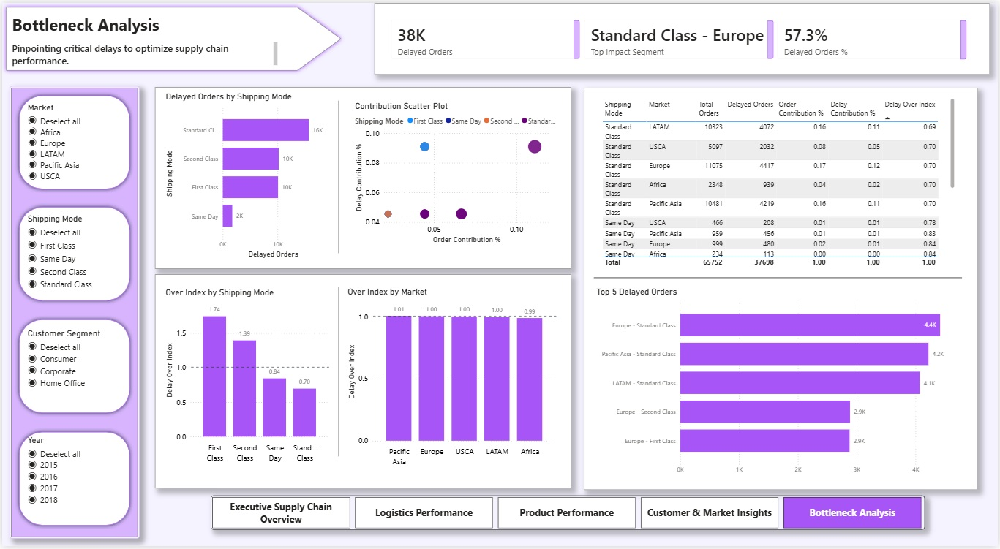

Revenue
$12.4M
Orders
180K+
Profit Margin
28.3%
Late Deliveries
57%
Business Problem
Nearly 57% of orders were delivered later than scheduled, indicating widespread fulfillment challenges.
The goal was to identify where delays have the highest business impact and prioritize operational improvements.
Key Insight
While premium shipping modes show higher relative delays, the majority of delayed orders are driven by high-volume Standard Class shipments.
A small number of high-volume segments (primarily Standard Class shipments in Europe and Asia) account for a disproportionately large share of delays.
This concentration presents an opportunity — targeted improvements in these segments can significantly reduce overall delays.
Dashboard Preview

Top Bottlenecks

Analytical Approach
- Star schema modeling
- Power BI dashboard development
- DAX-based KPI design
- Contribution vs Over Index analysis
Key Findings
- ~57% of orders are delayed, indicating systemic operational issues
- Standard Class drives majority of delays due to volume
- First Class shows higher inefficiency but lower impact
- Revenue follows a long-tail distribution
Tools Used
- Python (Pandas)
- Power BI
- DAX
- Data Modeling